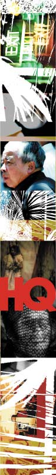

| |
HQ = HIGH QUALITY noise
| |
HQ magazine opened its doors for under-25ers to go to town on our favourite word, 'noise', asking entrants to submit photographs, illustrations, writing, zines and comics. We requested that they be adventurous, intelligent and thought provoking - as well as exploring the word we pinched for the festival - with the most engaging submissions printed in their October edition and/or hosted under the HQ banner on this here site.
| |
One of the first things you'll notice upon flicking through the pages of HQ magazine is a damn fine idea of all things we've been busy coordinating and fussing about here at noise for the past six months or so. Examples from projects like Antholgy, Fake Ads and the Fatboy Slim remix comp are in there, amidst the surging sea of youthful artworks and articles.
In other words, you could have submitted just about anything to be involved in this project, if your creative concept was clever enough of course. In fact, we may as well have said just that when we asked for contributions earlier in the year, because it's exactly what we got - mountains of untapped works of genius.
"This project has opened my eyes to the amazing breeding ground of Australian talent that exists in the under-25 age group," comments noise Print Producer Tracey Grimson, who has been involved with the HQ call out for several months, "...young people who are producing high quality creative works and who have interesting stories to tell, yet who aren't yet culturally or professionally recognised."
Right smack bang on the front of the segment is an example of the works of Mark Drew, a 23-year-old Sydneysider who says this about his unique brand of screenprinting/graf art - "Maybe my message is that art can still be cool even if it doesn't say anything. Create what you like. Borrow ideas. Give ideas. Don't get lost in trying to 'say' something."
And then there's Leah Manwaring, who at 22 is already proving to be a mover and shaker in the textile making business. "My work is both art and design," Leah explains of her complex and colourful fabric weaves, "you can look at it purely from an art perspective or purely from a design aesthetic."
You can see examples of Leah's works here on the site under the HQ banner during October, as well as loads more from other intriguing punters who have laid their creative wares on the page for your perusal - from DIY zine producers to Indigenous hip hop artists to urban photographers. Get it while it's hot and on the HQ, at newsagencies in October.
noise.net.au has plenty more where that came from too - stick around for more artist profiles and their works, and to find out what other noisy things are going on.
Return to the HQ Project Homepage
(Psst... we reckon you'll also be interested in the BLACK+WHITE, MONUMENT and AUSTRALIAN STYLE Projects)
|
|
|